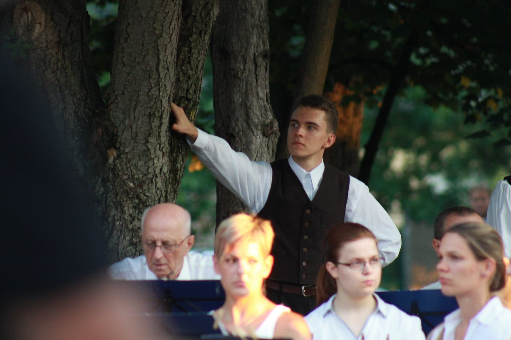
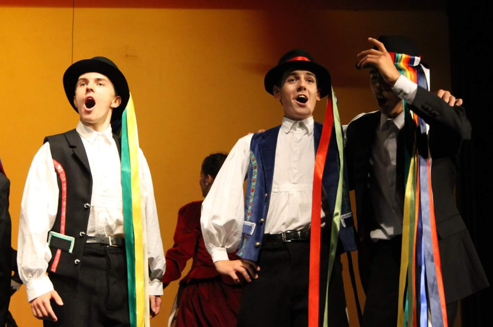

NÉPTÁNC
2010-ben kezdtem kezdtem táncolni a 16. kerületben. Magyar néptánc volt az együttes fő irányvonala, de az idő előrehaladtával sor került más nemzetek táncára is illetve kortárs, szinpadi táncra. Több külföldi útra volt lehetőségünk, 2013-ban törökországba jutottunk el, majd 2017-ben és 19-ben az USA-ban léptünk fel egy musicalben.
 